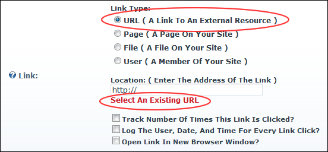
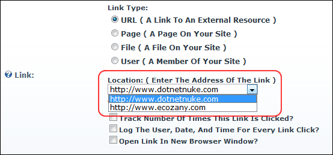

Selecting an Existing URL Link
How to select a link to an existing URL link using the Link Control. The URL link must have already been saved using the Link Control. Note: This tutorial assumes you are currently viewing the Link Control, which means you are either editing/adding an item on the Edit Page of a module or are on a Settings page.
- At Link Type, select URL ( A Link To An External Resource ).

- Below the Location: ( Enter The Address Of The Link ) text box, click the Select An Existing URL link. This displays a list of the existing URL's in the Link / Location: ( Enter The Address Of The Link ) drop down list.

- At Location: ( Enter The Address Of The Link ): select the URL from the drop down list.